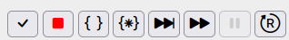
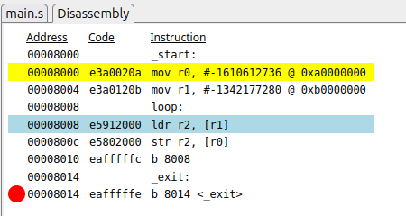
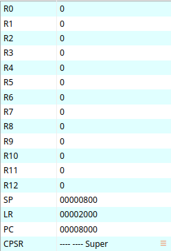
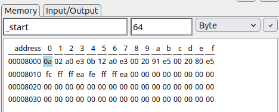
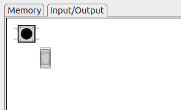

Once the debugger is started, several changes pops on the main window:
The top-level bar is also changed and new buttons are now enable. It looks like:

In order, the buttons allows:
The user can put breakpoints on any instruction of the program by clicking on the left of the instruction. Breakpoints are identified by big red dots and re-clicking on them remove the corresponding breakpoints.
Breakpoints are used during the program execution (button Continue) to stop the program at some points in order to examine the state (registers, memory, etc) of the program and detect errors.
At debugger start-up, some breakpoint are automatically installed by Bass
like on _exit in the screenshot below. Without such a breakpoint,
the execution would go one without noticing the executed code is not legal
code.

Left-pane provides a view of the microprocessor registers. The list and the type of registers depends on the actual model of the core. The view below shows the registers of an ARM core made of generic registers R0-R12 and four specialized registers: SP (stack pointer), LR (link register), PC (Program Counter) and SR (Status Register).

In this pane, you can observe the values of the registers in real-time during the program execution. Between to execution operations, changed registers are figured in red. You can also change register value by clicking on this value.
You can also change the way the value of a register is displayed by clicking on the floatting menu button (in orange) on the right of the register value. The following displays are available:
The right pane display a part of the whole memory.

To select the displayed memory, you have to, in the control bar:
And the memory is displayed with the corresponding address. The blue element is the first one of the target address while the displayed line are aligned on a 16-byte boundary.
As for registers, during the execution, the changed memory elements are represented in red.
The address field supports several formats:
0x-prefixed hexadecimal constant address._start).R1 or SP).
+/- constant.Depending on the chosen templates, input/output devices may be displayed as in the screenshot below:

In this example, two devices are figured:
These devices are controlled by the program and you can interact with during its execution as with a real board. The way the interaction is performed depends on the type of the device.